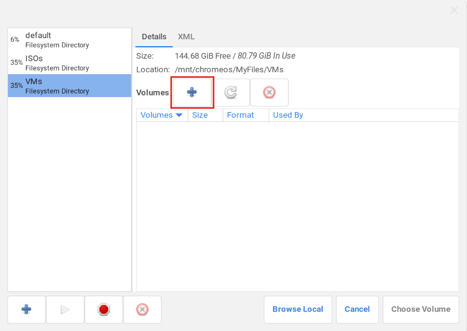
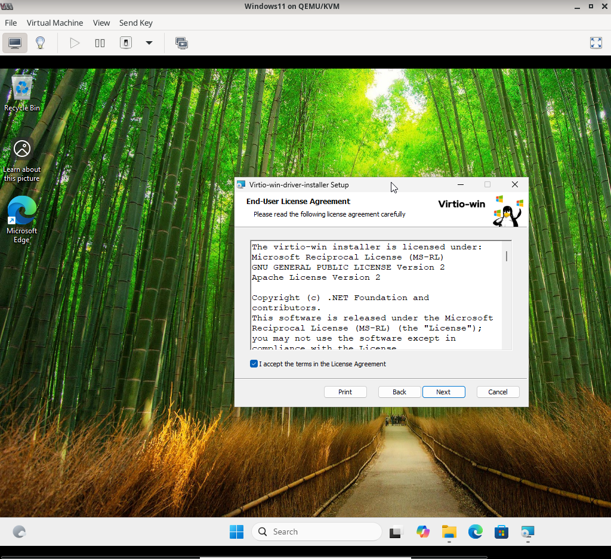
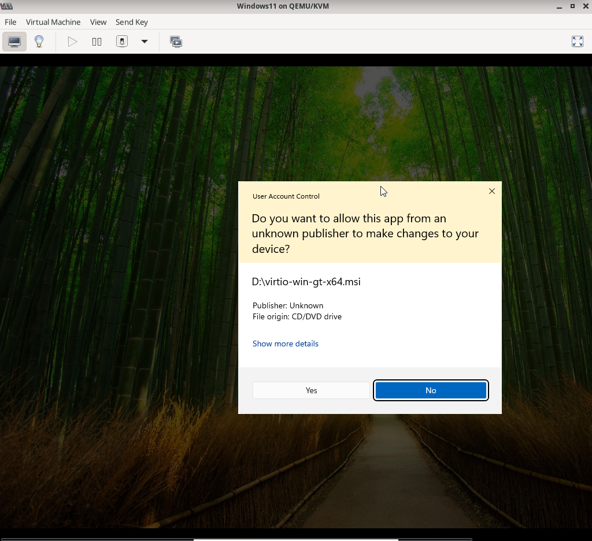

Objectives
The aim of this guide is to help you set up the software required to facilitate running a Windows operating system in a virtual machine (VM) within ChromeOS. This is no easy feat, as there are many steps required to achieve this goal, especially to achieve it successfully, to a level where Windows is actually usable. |
Virtualization
Because of the way the Linux Development Environment is implemented in ChromeOS, effectively what we're doing here is setting up Nested virtualization. Nested virtualization basically means running one VM inside another VM ... refer to the following conceptual image: |
Prerequisites
Running and using any virtual machine requires a lot of computer resources, like disk space and additional RAM, as well as a certain amount of patience and (in some cases) tinkering. This guide was tried and tested on a Dell Latitude 5400 running ChromeOS Flex 134.0.6998.130, with an Intel i5-8265U CPU, a 256 GB SSD, and 16 GB of RAM |
Important: this guide assumes that you have already set up the Linux Development Environment on your Chromebook. If not, please refer to my other Codelabs
Throughout this guide, you'll see certain words and phrases used to describe what we're trying to achieve here, as well as in the steps required to reach our goal. Here is a brief introduction for some of those terms:
Container: a self-contained package of software, essentially a virtualized environment, that allows you to run Linux applications on a ChromeOS device with isolation from the main system.
Crosh: think of this as Chrome Shell ... crosh is a command-shell environment for ChromeOS. Most Linux commands are locked down inside Crosh, i.e. sudo does not work.
Crostini: think of this as true Linux on ChromeOS. Allows you to run Linux apps (primarily for development) alongside your usual ChromeOS desktop and apps. Linux on Chromebooks offers developers the best of both worlds.
Domain: in this context, virtual machines are sometimes referred to (mainly in documentation) as domains.
Guest: in relation to Host below, a guest is a virtual machine running on a host machine.
Host: the bare-metal hardware on which a hypervisor will run "guest" virtual machines.
Hypervisor: a program used to run and manage one or more virtual machines on a computer.
KVM: Kernel-based Virtual Machine (KVM) is an open-source virtualization technology for Linux operating systems. With KVM, Linux can function as a hypervisor that runs multiple, isolated, virtual machines (VMs).
Libvirt: Libvirt is a collection of software that provides a convenient way to manage virtual machines and other virtualization functionality, such as storage and network interface management. These software implementations include an API library, a daemon (libvirtd), and a command-line utility (virsh).
Qcow2: (QEMU Copy-On-Write version 2) is a versatile disk-image format that supports features like compression, snapshots, and thin provisioning.
QEMU: the Quick Emulator (QEMU) is a free and open-source emulator that uses dynamic binary translation to emulate a computer's processor; that is, it translates the emulated binary codes to an equivalent binary format which is executed by the machine. It provides a variety of hardware and device models for the virtual machine, enabling it to run different guest operating systems.
Termina (not a typo ... mainly used internally): a VM image, with a stripped-down Linux kernel and user-land tools, developed by the ChromeOS team. Its only goal is to boot up as quickly as possible and start running containers.
Terminal: on ChromeOS, the Terminal is the main entry point into Linux, and the main way for you to interact with your development environment by running Linux command-line tools.
VHD: a Virtual Hard-Disk is a file format that acts as a virtual hard drive, allowing you to store operating systems and data as if it were a physical disk.
Virt-Manager: the virt-manager application (Virtual Machine Manager) is a desktop user interface for managing virtual machines through libvirt. It primarily targets KVM VMs, but also manages Xen and LXC (Linux Containers). It presents a summary view of running domains, with their live performance and resource utilization statistics. Wizards enable the creation of new domains, and configuration/adjustment of a domain's resource allocation and virtual hardware. An embedded VNC and SPICE client viewer presents a full graphical console to the guest domain.
VM: short for Virtual Machine, a VM is a virtualized operating system (or machine), in that the O/S is running as a guest on virtualized hardware, supplied and managed by the host (the actual computer that is running the hypervisor software).
Important: this guide assumes that you have already set up the Linux Development Environment on your Chromebook. If not, please refer to my other Codelabs
Time/space estimates
Update time | 2 minutes |
Install time | 2 minutes |
Disk space | 766 MB |
Update system
Before installing any major software, it's always a good idea to update your local packages/versions list, then carry out any system upgrades.
Start by opening a Linux Terminal window and running the following commands:
sudo apt update && sudo apt upgradeInstall hypervisor
Next, we'll install the required software and dependencies, using this command:
sudo apt install qemu-kvm virt-managerWhen the installation is complete, you should see a new icon in the Linux apps folder in your ChromeOS menu. Do not start the program yet though ... there's just one step we have to perform first, in the next section.
Set up ISOs share
To save space inside your VMs, and avoid possible duplicates, it's a good idea to store your .iso files in a separate folder in ChromeOS, then share that folder with Linux.
To do that, start by opening the Files app, and creating a folder called ISOs under the Downloads directory, then right-click the folder and select Share with Linux from the menu.
Set up VMs share
For similar reasons as above, and to make backups of your Linux environment smaller/quicker, we will store our virtual hard-disk (.qcow2) files in a separate folder in ChromeOS, and share that folder with Linux as well.
This time, create a folder named VMs in the root of your home directory, i.e. under My files. You should end up with a folder hierarchy similar to the following:
My files
|-- Downloads
|--|-- ISOs
|-- Linux files
|-- VMs
When you are ready, right-click the folder and select Share with Linux from the menu.
Download Windows
If you haven't done so already, now would be a good time to download the .iso file for whichever version of Windows you're going to install. These links might be helpful:
When you have the file, move it into the Downloads\ISOs folder that you created earlier. You should now have a file/folder hierarchy similar the following (the actual filename is not important):
My files
|-- Downloads
|--|-- ISOs
|--|--|-- Win11_24H2_English_x64.iso
With qemu-kvm, virt-manager, and their dependencies installed, we need to make some alterations to the settings file for QEMU, specifically /etc/libvirt/qemu.conf before running virt-manager (Virtual Machine Manager) for the first time.
In this demo, we will use the simple nano text-editor ... but, we'll need to install it first, as it's not included in the ChromeOS implementation of Debian.
Open your terminal, and run the following command:
sudo apt install nanoOnce it's installed, open the settings file with nano:
sudo nano /etc/libvirt/qemu.confFor the following lines, uncomment each line (remove the preceding #), then edit their values to reflect the following settings:
security_driver = "none" user = "root" group = "root" remember_owner = 0 cgroup_device_acl = []
If you're interested in what each of these settings does, read the accompanying notes within the file
Group membership
For convenience, the next thing you should do is add your Linux username to the libvirt group ... this will save you from having to enter your password when starting virt-manager. To achieve this, just type the following command in your Linux Terminal:
sudo usermod -a $USER -G libvirtConfigure virt-manager
Now you can click the icon to start Virtual Machine Manager ... and, for future access, pin the program's icon to your dock |
In the Virtual Machine Manager window, click the name QEMU/KVM once to highlight it, then from the Edit menu, select Connection Details.
Click the Virtual Networks tab, and check the box for Autostart ✓ On Boot then click Apply.
Next, click the Storage tab, and in the bottom-left corner, click the + for Add Pool.
In the Add a New Storage Pool dialog, for name type ISOs then click the Browse button.
Navigate to Other Locations | Computer | File System (whichever) so that you're looking at the contents of /mnt/chromeos/MyFiles/Downloads/ISOs (which is the folder you created/shared earlier) then click the Open button.
Back in the Add a New Storage Pool dialog, click the Finish button.
Back in the Connection Details window, with ISOs highlighted, you should now see the Windows .iso file that you downloaded earlier.
Repeat similar steps (as required) to add another storage pool named VMs which points to /mnt/chromeos/MyFiles/VMs ... close the Connection Details window when done.
In the Virtual Machine Manager program, select New Virtual Machine from the File menu
Accept the default Local install media and click Forward
Next to Choose ISO or CDROM install media, click Browse
In the Locate ISO media volume dialog, click ISOs once to highlight it, and click the Windows .iso file (that you downloaded earlier) to select it, then click Choose Volume
When the Automatically detect from the installation media/source checkbox is selected, the installer should be able to detect the correct Windows version. If not, uncheck the box, start typing Windows then select your version from the list. Click the Forward button when ready

For the Choose Memory and CPU settings section, give at least 8 GB of RAM and at least 4 CPU cores
In the next step of the wizard, choose the Select or create custom storage option, then click the Manage button:
Click the VMs pool that we added earlier, then click the + button to Create new volume

In the Create storage volume dialog, change the Capacity to at least 60 GB ...
Change the filename (if desired ... no spaces) and click Finish when ready:
Once added, your new .qcow2 file will be listed in the Volumes pane ... click your new file once to highlight it, then hit the Choose Volume button
You'll be returned to the New VM wizard ... click Forward when ready:
(note that this screenshot has been edited to show full path/filename)
The final step for the KVM install wizard allows you to name your VM (no spaces) and shows a summary of the selections you've made ... if you just click Finish now without selecting the Customize configuration before install checkbox, then the VM (and the Windows installer) will start automatically ... however, if you do select the checkbox, you will see the window presented in the next screenshot:
This is the window you are presented with if you selected the Customize configuration before install checkbox ... here, you can double-check/customize settings before beginning the installation process
You'll need to click inside the window to give it focus, then press the any key to boot from ISO:
Time/space estimates
Install phase | Windows 10 | Windows 11 |
Initial installation | 4 minutes | 6 minutes |
First run experience | 2 minutes | 4 minutes |
Finalize installation | 4 minutes | 6 minutes |
Total estimated time | 10 minutes | 16 minutes |
Disk space (incl drivers) | 10.3 GB | 15.7 GB |
For language settings, select your language, then time and currency format:
Now select your desired keyboard layout, if it's not already selected:
Because this is a clean install, the checkbox is hardly relevant, but you still need to select "I agree everything will be deleted including files, apps, and settings" before you can click the Next button:
If you do have a product key for this copy of Windows, enter it now ... do not be tempted to use the one from your main PC. If you don't yet have a product key, just click I don't have a product key:
Select your desired Windows flavor ... Windows Pro is best for a nested VM. More on that later:
You'll need to Accept the licensing terms before continuing:

Again, if this is a clean install, then all disk space is currently unallocated ... just click Next and the Windows installer will create all the required disk partitions automatically:
That's it ... you are now ready to click Install:
The installation will take up to 20 minutes to complete ... the VM will restart several times:
Getting there ...
Windows 11 only: to skip all Windows Updates during the installation process, when you first get to the Country or Region prompt, on your Chromebook keyboard, press Shift + Search + 0 (zero) ... (this is equivalent to Shift + F10 on a conventional keyboard) ... once Command Prompt opens, click the window once to give it focus, then type oobe\bypassnro
Ensure you are in the correct directory, as shown:
C:\Windows\System32>oobe\bypassnro
As soon as you press the Enter key, the Windows installer will restart, but this time without the requirement for a network connection:
While installer in Restarting
Windows 10 and 11: in Virtual Machine Manager, select Details from the View menu, and in the left-hand column, select your NIC, then in the main section, uncheck the box next to Active. Now, you can switch back to the VM by selecting Console from the View menu.
Now that the installer phase is complete, Windows will ask you for a few details. Start by choosing your Country or Region, if not already selected, then click Yes:
Next, select your keyboard layout, and click Yes when ready:
Add a second keyboard layout (if desired) ... or just click Skip:
When you reach the Networking section, if you followed the steps to disable updates during install, you'll be able to choose I don't have Internet:
However, if networking is still active, then you'll be prompted for a computer name (for the network). Enter a name for this PC, then click Next ... the installer will restart:
Select the primary use for this PC, then click Next:
Enter a username ... by default, this user will be added to the Administrator's group:
Enter a password (if desired) and click Next:
Enable or disable your preferred Privacy settings and click Next:
That's it ... you are now running Windows within your Chromebook:
Open a Windows Explorer window and go to This PC ... eject the Windows installer "CD-ROM" then go to the next section, where you'll download and insert another .iso file as a virtual CD-ROM:

Please read at least the first 4 paragraphs on this page, so you can get an overview of what we're trying to achieve in this section.
For any operating system to function at its peak, it needs to have the correct drivers installed, and we want to ensure that we download those drivers from a reputable source. The good people at the Fedora Project have a VirtIO drivers ISO file that we can download, then use to install these drivers.
Start by going to this Fedora Project webpage using your ChromeOS browser, and follow the link next to For details on downloading the drivers ... this will take you to their GitHub page for the VirtIO drivers.
On their GitHub page, under the Downloads heading, click the link for Stable virt-win ISO ... save the file to the same folder as your Windows ISO file.
Assuming your Windows virtual machine is still running, and you ejected the Windows installer CD-ROM gracefully, you can now adjust the settings for this VM by going to Virtual Machine Manager and selecting Details from the View menu ... in the left-hand column, select SATA CDROM 1 then click the Browse button on the right.
In the same way that we selected the Windows .iso earlier, in the Locate ISO media volume dialog, click ISOs once to highlight it, then double-click the virtio-win-x.x.xxx.iso file that you just downloaded ... this will effectively insert the ISO image as a virtual CD-ROM.
Back in the Windows VM, open Windows Explorer and navigate to the CD-ROM drive ... there, you should see the virtio-win-guest-tools.exe installer. Double-click this file to launch it. Follow the prompts to install the drivers, just like installing any other software:
You'll need to Accept the licensing terms before continuing

Accept the defaults, or pick and choose which drivers to install
Windows will show a User Account Control prompt ... click Yes to continue

When the installation if complete, restart the VM for all changes to take effect
Automated install or Script
You might want to test various O/S versions, or be able to quickly create a VM using a bash script. Here is a sample command to automate a VM installation:
Notes:
- each VM name and .qcow2 filename must be unique
- the backslashes allow breaking up (what would otherwise be) a very long command-line into several human-readable lines
- although the VM does still start automatically, the
noautoconsoleparameter just prevents virt-manager from opening the VM in a not-very-helpful Virtual Machine Viewer
virt-install \
--name Win11 \
--ram 8192 \
--disk path=/mnt/chromeos/MyFiles/VMs/win11.qcow2,size=60 \
--check disk_size=off \
--vcpus 4 \
--os-variant win11 \
--cdrom /mnt/chromeos/ISOs/Win11_24H2_English_x64.iso \
--noautoconsoleFor more details on this command and available options, type virt-install --help in your Linux Terminal
Clone a Virtual Machine
Here is a sample command to make an exact copy of an existing VM (new name and filename must be unique):
virt-clone \
--original Win11 \
--name Win11v2 \
--file /mnt/chromeos/MyFiles/VMs/win11v2.qcow2For more details on this command and available options, type virt-clone --help in your Linux Terminal
Actual file sizes
With the .qcow2 file format, Linux only displays the total disk size, in both file managers and on the command-line. To find out the actual disk space used, use the qemu-img command, as shown in this example:
sudo qemu-img info /mnt/chromeos/MyFiles/VMs/win11.qcow2Sample output:
image: win11.qcow2
file format: qcow2
virtual size: 128 GiB (137438953472 bytes)
disk size: 16.3 GiB
cluster_size: 65536
Snapshot list:
ID TAG VM SIZE DATE VM CLOCK ICOUNT
1 FreshInstall 0 B 2025-03-10 08:20:13 00:00:00.000 0
Format specific information:
compat: 1.1
compression type: zlib
lazy refcounts: true
refcount bits: 16
corrupt: false
extended l2: false
Note the just-created snapshot information, about halfway down
Relating specifically to this guide
Original tux image by OpenClipart-Vectors from Pixabay
https://www.redhat.com/en/topics/virtualization/what-is-KVM
https://wiki.libvirt.org/FAQ.html#what-is-libvirt
https://en.wikipedia.org/wiki/QEMU
https://virt-manager.org/